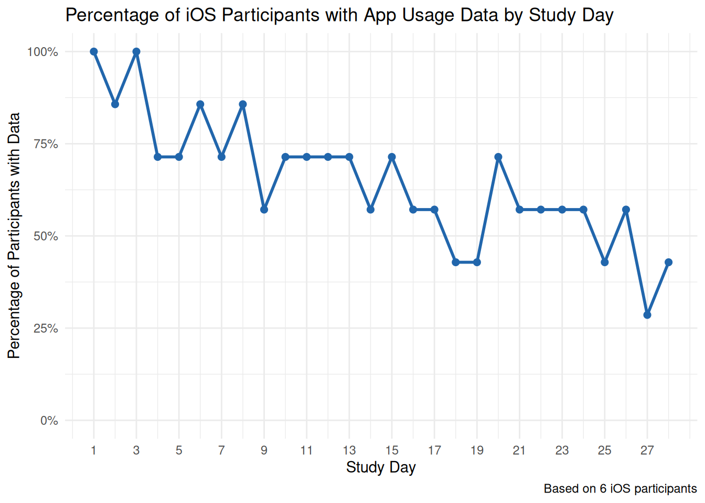

This notebook explores iOS app usage data from the gaming reduction study, focusing on data availability across study days (1-28) for each participant. The analysis uses enrollment dates to calculate study days and assess whether donated data exists for each day, with particular emphasis on gaming app usage patterns.
Data Refresh Pipeline
Show code
# Set to TRUE to refresh data from Qualtrics and re-run OCR analysis# WARNING: Data refresh can take 10+ minutes due to image downloads and OCR processing# NOTE: OCR analysis now skips already-analyzed images for efficiency# To force reprocessing of all images, you'll need to manually run with --reprocess-existingREFRESH_DATA <-TRUE# Cache duration: refresh data if older than 1 hourCACHE_DURATION_HOURS <-1# Define the output files to check for cachingFINAL_OUTPUT_FILE <-"../../downloads/ios/aggregated_participant_data_enriched.csv"CONTACT_LIST_FILE <-"../../.tmp/contact_list_with_embedded.csv"# Check if we need to refresh data based on file ageshould_refresh_data <-function(file_path, cache_hours =1) {if (!file.exists(file_path)) {return(TRUE) } file_age_hours <-as.numeric(difftime(Sys.time(), file.mtime(file_path), units ="hours"))return(file_age_hours > cache_hours)}# Check if either main data or contact list needs refreshneeds_main_refresh <-should_refresh_data(FINAL_OUTPUT_FILE, CACHE_DURATION_HOURS)needs_contact_refresh <-should_refresh_data(CONTACT_LIST_FILE, CACHE_DURATION_HOURS)if (REFRESH_DATA && (needs_main_refresh || needs_contact_refresh)) {cat("=== REFRESHING iOS DATA FROM QUALTRICS ===\n")cat("Running complete iOS data pipeline...\n\n")# Step 1: Pull contact list data from Qualtrics (FIRST - other steps depend on this)cat("Step 1/6: Pulling contact list data from Qualtrics...\n") step1_result <-tryCatch({system2("python3",args =c("../pull_contact_list.py", "--output", "contact_list_with_embedded"),stdout =TRUE,stderr =TRUE,wait =TRUE ) }, error =function(e) {cat("❌ Error in Step 1:", e$message, "\n")return(NULL) })if (!is.null(attr(step1_result, "status")) &&attr(step1_result, "status") !=0) {cat("⚠️ Warning: Step 1 exited with non-zero status\n")if (length(step1_result) >0) {cat("Output:\n", paste(tail(step1_result, 10), collapse ="\n"), "\n") } } else {cat("✅ Step 1 completed successfully\n") }# Step 2: Download Qualtrics imagescat("\nStep 2/6: Downloading Qualtrics survey responses and images...\n")cat("(This may take several minutes - downloading and processing images)\n") step2_result <-tryCatch({system2("python3",args =c("../../monitoring/qualtrics_image_downloader.py", "--verbose"),stdout =TRUE,stderr =TRUE,wait =TRUE,timeout =600# 10 minute timeout ) }, error =function(e) {cat("❌ Error in Step 2:", e$message, "\n")return(NULL) })if (!is.null(attr(step2_result, "status")) &&attr(step2_result, "status") !=0) {cat("⚠️ Warning: Step 2 exited with non-zero status\n")if (length(step2_result) >0) {cat("Output:\n", paste(tail(step2_result, 10), collapse ="\n"), "\n") } } else {cat("✅ Step 2 completed successfully\n") }# Step 3: OCR analysis with Gemini (process all iOS images)cat("\nStep 3/6: Analyzing screenshots with Gemini OCR...\n")cat("(Skipping already-analyzed images for efficiency)\n") step3_result <-tryCatch({system2("python3",args =c("../../monitoring/ocr/gemini_screenshot_analyzer.py","../../downloads/ es/ios","--output-dir", "../../downloads/ios","--summary-only"),stdout =TRUE,stderr =TRUE,wait =TRUE ) }, error =function(e) {cat("❌ Error in Step 3:", e$message, "\n")return(NULL) })if (!is.null(attr(step3_result, "status")) &&attr(step3_result, "status") !=0) {cat("⚠️ Warning: Step 3 exited with non-zero status\n")if (length(step3_result) >0) {cat("Output:\n", paste(tail(step3_result, 10), collapse ="\n"), "\n") } } else {cat("✅ Step 3 completed successfully\n") }# Step 4: Aggregate participant data for all participantscat("\nStep 4/6: Aggregating participant data...\n") step4_result <-tryCatch({system2("python3",args =c("../../monitoring/ocr/participant_aggregator.py","--group","--base-dir", "../../downloads/ios","--qualtrics-csv", "../../downloads/HFF Gaming Reduction 3 - Daily Survey.csv","--output-report", "../../downloads/ios/participant_summary.json"),stdout =TRUE,stderr =TRUE,wait =TRUE ) }, error =function(e) {cat("❌ Error in Step 4:", e$message, "\n")return(NULL) })if (!is.null(attr(step4_result, "status")) &&attr(step4_result, "status") !=0) {cat("⚠️ Warning: Step 4 exited with non-zero status\n")if (length(step4_result) >0) {cat("Output:\n", paste(tail(step4_result, 10), collapse ="\n"), "\n") } } else {cat("✅ Step 4 completed successfully\n") }# Step 5: Convert summary JSON to CSVcat("\nStep 5/6: Converting summary to CSV...\n") step5_result <-tryCatch({system2("python3",args =c("../../monitoring/ocr/summary_to_csv.py","../../downloads/ios/participant_summary.json","--output", "../../downloads/ios/aggregated_participant_data.csv"),stdout =TRUE,stderr =TRUE,wait =TRUE ) }, error =function(e) {cat("❌ Error in Step 5:", e$message, "\n")return(NULL) })if (!is.null(attr(step5_result, "status")) &&attr(step5_result, "status") !=0) {cat("⚠️ Warning: Step 5 exited with non-zero status\n")if (length(step5_result) >0) {cat("Output:\n", paste(tail(step5_result, 10), collapse ="\n"), "\n") } } else {cat("✅ Step 5 completed successfully\n") }# Step 6: Classify gaming appscat("\nStep 6/6: Classifying gaming applications...\n") step6_result <-tryCatch({system2("python3",args =c("../../monitoring/ocr/app_game_classifier.py","../../downloads/ios/aggregated_participant_data.csv","--output", "../../downloads/ios/aggregated_participant_data_enriched.csv","--format", "ios"),stdout =TRUE,stderr =TRUE,wait =TRUE ) }, error =function(e) {cat("❌ Error in Step 6:", e$message, "\n")return(NULL) })if (!is.null(attr(step6_result, "status")) &&attr(step6_result, "status") !=0) {cat("⚠️ Warning: Step 6 exited with non-zero status\n")if (length(step6_result) >0) {cat("Output:\n", paste(tail(step6_result, 10), collapse ="\n"), "\n") } } else {cat("✅ Step 6 completed successfully\n") }cat("\n🎉 iOS data pipeline completed!\n\n")} elseif (REFRESH_DATA) { file_age_hours <-as.numeric(difftime(Sys.time(), file.mtime(FINAL_OUTPUT_FILE), units ="hours"))cat("=== USING CACHED iOS DATA ===\n")cat(sprintf("Data file is %.1f hours old (cache valid for %d hours)\n", file_age_hours, CACHE_DURATION_HOURS))cat("Skipping refresh to save time. Set REFRESH_DATA <- FALSE to always skip refresh.\n\n")} else {cat("=== USING EXISTING iOS DATA FILES ===\n")cat("Skipping data refresh (REFRESH_DATA = FALSE)\n\n")}
=== REFRESHING iOS DATA FROM QUALTRICS ===
Running complete iOS data pipeline...
Step 1/6: Pulling contact list data from Qualtrics...
✅ Step 1 completed successfully
Step 2/6: Downloading Qualtrics survey responses and images...
(This may take several minutes - downloading and processing images)
✅ Step 2 completed successfully
Step 3/6: Analyzing screenshots with Gemini OCR...
(Skipping already-analyzed images for efficiency)
❌ Error in Step 3: error in running command
✅ Step 3 completed successfully
Step 4/6: Aggregating participant data...
# Check if output files exist and show their infofiles_to_check <-c(FINAL_OUTPUT_FILE, CONTACT_LIST_FILE)for (file in files_to_check) {if (file.exists(file)) { file_info <-file.info(file)cat(sprintf("✓ %s exists (modified: %s, size: %s bytes)\n", basename(file), file_info$mtime, format(file_info$size, big.mark =","))) } else {cat(sprintf("✗ %s not found - data pipeline may have failed\n", basename(file))) }}
# Load the iOS aggregated app usage dataios_data <-read_csv("../../downloads/ios/aggregated_participant_data_enriched.csv")# Load iOS-specific participant report if availableif (file.exists("../../.tmp/participant_report_ios.csv")) { participant_report_ios <-read_csv("../../.tmp/participant_report_ios.csv")cat("✓ Loaded iOS-specific participant report with", nrow(participant_report_ios), "participants\n")# Show iOS participants summary ios_with_data <-sum(participant_report_ios$has_ios_data, na.rm =TRUE)cat(" Participants with iOS platforms:", ios_with_data, "\n")} else {cat("⚠️ iOS-specific participant report not found. Run join_diary_ios.py to generate it.\n") participant_report_ios <-NULL}
⚠️ iOS-specific participant report not found. Run join_diary_ios.py to generate it.
Show code
# Load contact list data with embedded fields (Condition, Platforms, phoneType, EnrollmentDate)if (file.exists("../../.tmp/contact_list_with_embedded.csv")) { contact_list_data <-read_csv("../../.tmp/contact_list_with_embedded.csv") %>%select(RANDOM_ID, Condition, Platforms, phoneType, EnrollmentDate) %>%filter(!is.na(RANDOM_ID) & RANDOM_ID !="") %>%distinct(RANDOM_ID, .keep_all =TRUE) %>%mutate(RANDOM_ID =as.character(RANDOM_ID),EnrollmentDate =ymd(EnrollmentDate) )# Check if any iOS participants are missing from contact list participants_without_condition <- ios_data %>%distinct(PID) %>%filter(!PID %in% contact_list_data$RANDOM_ID)if (nrow(participants_without_condition) >0) {cat("⚠️ WARNING: Found", nrow(participants_without_condition), "participants without contact list data:\n")print(participants_without_condition$PID)cat("\nConsider re-running with REFRESH_DATA <- TRUE to pull fresh contact list data.\n\n") } enrollment_data <- contact_list_data} else {cat("⚠️ WARNING: Contact list file not found. Using fallback from daily survey file.\n")cat("Consider re-running with REFRESH_DATA <- TRUE to pull contact list data.\n\n")# Fallback: Load enrollment data from the daily survey file enrollment_data <-read_csv("../../downloads/HFF Gaming Reduction 3 - Daily Survey.csv") %>%# Skip the first 3 header rows and select relevant columnsslice(-(1:3)) %>%select(RANDOM_ID, EnrollmentDate, Condition) %>%filter(!is.na(RANDOM_ID) & RANDOM_ID !=""&!is.na(EnrollmentDate)) %>%distinct(RANDOM_ID, .keep_all =TRUE) %>%mutate(RANDOM_ID =as.character(RANDOM_ID),EnrollmentDate =ymd(EnrollmentDate),# Add placeholder columns for consistencyPlatforms =NA_character_,phoneType =NA_character_ )}
⚠️ WARNING: Found 1 participants without contact list data:
[1] 3630021688
Consider re-running with REFRESH_DATA <- TRUE to pull fresh contact list data.
Show code
# Display data structurecat("iOS App Usage Data Structure:\n")
cat("\nNumber of participants in iOS data:", n_distinct(ios_data$PID), "\n")
Number of participants in iOS data: 9
Show code
cat("Number of participants with enrollment/contact data:", nrow(enrollment_data), "\n")
Number of participants with enrollment/contact data: 36
Show code
# Show condition distribution if availableif ("Condition"%in%names(enrollment_data)) { condition_counts <- enrollment_data %>%count(Condition) %>%mutate(Condition =ifelse(is.na(Condition), "Missing", Condition))cat("\nCondition distribution in contact list:\n")print(condition_counts)}
Condition distribution in contact list:
# A tibble: 3 × 2
Condition n
<chr> <int>
1 control 18
2 intervention 14
3 Missing 4
Data Preparation
Show code
# Process iOS data and join with enrollment informationios_processed <- ios_data %>%mutate(PID =as.character(PID),Date =ymd(Date),Duration =as.numeric(Duration),DeviceType =tolower(trimws(DeviceType)), # Standardize device typeProbGame =case_when( ProbGame =="Yes"~TRUE, ProbGame =="No"~FALSE,TRUE~NA ) ) %>%# Join with enrollment data (now includes Condition, Platforms, phoneType)left_join(enrollment_data, by =c("PID"="RANDOM_ID")) %>%filter(!is.na(EnrollmentDate)) %>%mutate(# Calculate study day based on enrollment datestudy_day =as.numeric(Date - EnrollmentDate) +1 ) %>%filter(study_day >=1& study_day <=28) # Focus on 28-day study period# Check if any participants have missing Condition after joinparticipants_missing_condition <- ios_processed %>%filter(is.na(Condition)) %>%distinct(PID)if (nrow(participants_missing_condition) >0) {cat("\n⚠️ WARNING: After joining,", nrow(participants_missing_condition), "participants still missing Condition data:\n")print(participants_missing_condition$PID)cat("These participants may not be in the contact list yet.\n")}# Check for participants without enrollment datamissing_enrollment <- ios_data %>%filter(!PID %in% enrollment_data$RANDOM_ID) %>%distinct(PID)if(nrow(missing_enrollment) >0) {cat("Participants in iOS data without enrollment information:\n")print(missing_enrollment$PID)} else {cat("All iOS participants have enrollment data.\n")}
Participants in iOS data without enrollment information:
[1] 3630021688
Show code
# Device type summarydevice_summary <- ios_processed %>%group_by(DeviceType) %>%summarise(participants =n_distinct(PID),sessions =n(),total_duration =sum(Duration, na.rm =TRUE),.groups ="drop" ) %>%arrange(desc(participants))cat("\nDevice Type Summary:\n")
# Only proceed if we have availability_summary dataif (exists("availability_summary") &&nrow(availability_summary) >0&&exists("ios_processed") &&nrow(ios_processed) >0) {# Plot percentage of participants with data by study day availability_trend <- availability_summary %>%ggplot(aes(x = study_day, y = percentage_with_data)) +geom_line(color ="#2166ac", size =1) +geom_point(color ="#2166ac", size =2) +scale_x_continuous(breaks =seq(1, 28, 2)) +scale_y_continuous(limits =c(0, 100), labels =function(x) paste0(x, "%")) +labs(title ="Percentage of iOS Participants with App Usage Data by Study Day",x ="Study Day",y ="Percentage of Participants with Data",caption =paste0("Based on ", n_distinct(ios_processed$PID), " iOS participants") ) +theme_minimal()print(availability_trend)# Additional summary statisticscat("\nData Availability Statistics:\n")cat("- Days with 100% participation:", sum(availability_summary$percentage_with_data ==100), "\n")cat("- Days with >50% participation:", sum(availability_summary$percentage_with_data >50), "\n")cat("- Days with <25% participation:", sum(availability_summary$percentage_with_data <25), "\n")} else {cat("No availability summary data available for trends visualization.\n")}

Data Availability Statistics:
- Days with 100% participation: 0
- Days with >50% participation: 17
- Days with <25% participation: 1
Individual Participant Patterns
Show code
# Only proceed if we have complete_grid dataif (exists("complete_grid") &&nrow(complete_grid) >0) {# Look at individual participant data patterns participant_patterns <- complete_grid %>%group_by(PID, Condition, study_completion_status, status_category) %>%summarise(total_days_with_data =sum(has_data, na.rm =TRUE),consecutive_days =max(rle(has_data)$lengths[rle(has_data)$values ==TRUE], na.rm =TRUE),first_day_with_data =min(study_day[has_data], na.rm =TRUE),last_day_with_data =max(study_day[has_data], na.rm =TRUE),total_gaming_duration =sum(gaming_duration, na.rm =TRUE),.groups ="drop" ) %>%mutate(consecutive_days =ifelse(is.infinite(consecutive_days), 0, consecutive_days),data_span = last_day_with_data - first_day_with_data +1,avg_gaming_per_day =round(total_gaming_duration / total_days_with_data, 1) ) %>%# Sort by completion statusarrange(status_category, PID)# Summary by conditionpattern_summary <- participant_patterns %>%group_by(Condition) %>%summarise(n_participants =n(),avg_days_with_data =mean(total_days_with_data, na.rm =TRUE),median_days_with_data =median(total_days_with_data, na.rm =TRUE),avg_consecutive_days =mean(consecutive_days, na.rm =TRUE),avg_gaming_duration =mean(total_gaming_duration, na.rm =TRUE),.groups ="drop" )cat("iOS Participant Data Patterns by Condition:\n")datatable(pattern_summary,caption ="iOS Participant Data Patterns Summary by Condition",colnames =c("Condition", "Participants", "Avg Days with Data", "Median Days with Data", "Avg Consecutive Days", "Avg Total Gaming Duration (min)"),options =list(pageLength =10,scrollX =TRUE,order =list(list(0, 'asc')) ),filter ='top') %>%formatRound(columns =c(3, 4, 5, 6), digits =1)# Interactive detailed participant tabledatatable(participant_patterns, caption ="Individual iOS Participant Data Patterns (Sorted by Completion Status)",options =list(pageLength =20,scrollX =TRUE,columnDefs =list(list(width ='100px', targets =c(0, 1, 2, 3))),order =list(list(2, 'asc')) ),filter ='top') %>%formatRound(columns =c(5, 6, 7, 8, 9, 10, 11), digits =1)} else {cat("No complete_grid data available for individual participant patterns analysis.\n")# Create empty objects to prevent errors in later sections participant_patterns <-data.frame()}
iOS Participant Data Patterns by Condition:
Key Findings Summary
Show code
# Only proceed if we have the required dataif (exists("ios_processed") &&nrow(ios_processed) >0&&exists("availability_summary") &&nrow(availability_summary) >0&&exists("participant_patterns") &&nrow(participant_patterns) >0) {# Calculate key statistics total_ios_participants <-n_distinct(ios_processed$PID) days_with_any_data <-sum(availability_summary$participants_with_data >0) peak_participation_day <- availability_summary$study_day[which.max(availability_summary$percentage_with_data)] peak_participation_rate <-max(availability_summary$percentage_with_data) avg_days_per_participant <-mean(participant_patterns$total_days_with_data, na.rm =TRUE) participants_with_full_study <-sum(participant_patterns$total_days_with_data >=20, na.rm =TRUE)# Gaming statistics total_gaming_apps <-n_distinct(ios_processed$App[ios_processed$ProbGame ==TRUE]) avg_gaming_duration <-mean(participant_patterns$total_gaming_duration, na.rm =TRUE)# Completion status countscompletion_counts <- participant_summary %>%count(study_completion_status)in_progress <- completion_counts$n[completion_counts$study_completion_status =="🟡 In Progress"]complete <- completion_counts$n[completion_counts$study_completion_status =="✅ Complete"]incomplete <- completion_counts$n[completion_counts$study_completion_status =="🔴 Incomplete"]# Handle NA values for missing statusesin_progress <-ifelse(length(in_progress) ==0, 0, in_progress)complete <-ifelse(length(complete) ==0, 0, complete)incomplete <-ifelse(length(incomplete) ==0, 0, incomplete)cat("=== iOS APP USAGE KEY FINDINGS ===\n\n")cat("Study Overview:\n")cat("- Total iOS participants with app usage data:", total_ios_participants, "\n")cat("- Report generated on:", as.character(Sys.Date()), "\n")cat("- Study days with any data:", days_with_any_data, "out of 28\n")cat("- Peak participation on day", peak_participation_day, "with", round(peak_participation_rate, 1), "% of participants\n\n")cat("Study Completion Status:\n")cat("- 🟡 In Progress (not yet 28 days since enrollment):", in_progress, "participants\n")cat("- ✅ Complete (≥28 days, ≥20 days of data):", complete, "participants\n")cat("- 🔴 Incomplete (≥28 days, <20 days of data):", incomplete, "participants\n\n")cat("Data Coverage:\n")cat("- Average days with data per participant:", round(avg_days_per_participant, 1), "\n")cat("- Participants with data for ≥20 days:", participants_with_full_study, "out of", total_ios_participants, "\n")cat("- Overall data availability rate:", round(mean(availability_summary$percentage_with_data), 1), "%\n\n")cat("Gaming Analysis:\n")cat("- Unique gaming apps identified:", total_gaming_apps, "\n")cat("- Average total gaming duration per participant:", round(avg_gaming_duration, 1), "minutes\n")if(exists("gaming_apps_summary") &&nrow(gaming_apps_summary) >0) {cat("- Gaming apps used by ≥2 participants:", nrow(gaming_apps_summary), "\n\n")} else {cat("- Gaming apps used by ≥2 participants: Data not available\n\n")}cat("Condition Comparison:\n")if(exists("pattern_summary") &&nrow(pattern_summary) >0) { control_avg <- pattern_summary$avg_days_with_data[pattern_summary$Condition =="control"] intervention_avg <- pattern_summary$avg_days_with_data[pattern_summary$Condition =="intervention"] control_gaming <- pattern_summary$avg_gaming_duration[pattern_summary$Condition =="control"] intervention_gaming <- pattern_summary$avg_gaming_duration[pattern_summary$Condition =="intervention"]if(length(control_avg) >0) cat("- Control group average days:", round(control_avg, 1), "\n")if(length(intervention_avg) >0) cat("- Intervention group average days:", round(intervention_avg, 1), "\n")if(length(control_gaming) >0) cat("- Control group average gaming duration:", round(control_gaming, 1), "min\n")if(length(intervention_gaming) >0) cat("- Intervention group average gaming duration:", round(intervention_gaming, 1), "min\n")} else {cat("- Condition comparison data not available\n")}} else {cat("=== iOS APP USAGE KEY FINDINGS ===\n\n")cat("❌ ERROR: Insufficient data for summary report.\n")cat("Check data loading and processing steps.\n")}
=== iOS APP USAGE KEY FINDINGS ===
Study Overview:
- Total iOS participants with app usage data: 8
- Report generated on: 2025-09-01
- Study days with any data: 28 out of 28
- Peak participation on day 1 with 88.9 % of participants
Study Completion Status:
- 🟡 In Progress (not yet 28 days since enrollment): 3 participants
- ✅ Complete (≥28 days, ≥20 days of data): 4 participants
- 🔴 Incomplete (≥28 days, <20 days of data): 1 participants
Data Coverage:
- Average days with data per participant: 18.5
- Participants with data for ≥20 days: 4 out of 8
- Overall data availability rate: 58.7 %
Gaming Analysis:
- Unique gaming apps identified: 23
- Average total gaming duration per participant: 465.8 minutes
- Gaming apps used by ≥2 participants: Data not available
Condition Comparison:
- Control group average days: 17.2
- Intervention group average days: 19.8
- Control group average gaming duration: 31.5 min
- Intervention group average gaming duration: 900 min
Data Export
Show code
# Create output directory if it doesn't existif (!dir.exists("../../.tmp/ios")) {dir.create("../../.tmp/ios", recursive =TRUE)}# Export processed data for further analysis (only if objects exist)exported_files <-character(0)if (exists("complete_grid") &&nrow(complete_grid) >0) {write_csv(complete_grid, "../../.tmp/ios/study_day_availability_matrix.csv") exported_files <-c(exported_files, "- study_day_availability_matrix.csv: Complete participant x study day matrix")}if (exists("availability_summary") &&nrow(availability_summary) >0) {write_csv(availability_summary, "../../.tmp/ios/daily_availability_summary.csv") exported_files <-c(exported_files, "- daily_availability_summary.csv: Daily availability percentages")}if (exists("participant_patterns") &&nrow(participant_patterns) >0) {write_csv(participant_patterns, "../../.tmp/ios/participant_data_patterns.csv") exported_files <-c(exported_files, "- participant_data_patterns.csv: Individual participant patterns")}if (exists("gaming_timeseries") &&nrow(gaming_timeseries) >0) {write_csv(gaming_timeseries, "../../.tmp/ios/gaming_timeseries_data.csv") exported_files <-c(exported_files, "- gaming_timeseries_data.csv: Gaming duration time series data")}if (exists("gaming_apps_summary") &&nrow(gaming_apps_summary) >0) {write_csv(gaming_apps_summary, "../../.tmp/ios/gaming_apps_summary.csv") exported_files <-c(exported_files, "- gaming_apps_summary.csv: Gaming apps usage statistics")}if (exists("top_gaming_by_participant") &&nrow(top_gaming_by_participant) >0) {write_csv(top_gaming_by_participant, "../../.tmp/ios/top_gaming_apps_by_participant.csv") exported_files <-c(exported_files, "- top_gaming_apps_by_participant.csv: Top gaming apps per participant")}if (length(exported_files) >0) {cat("Exported iOS analysis files:\n")cat(paste(exported_files, collapse ="\n"), "\n")} else {cat("No data available for export.\n")}
Exported iOS analysis files:
- study_day_availability_matrix.csv: Complete participant x study day matrix
- daily_availability_summary.csv: Daily availability percentages
- participant_data_patterns.csv: Individual participant patterns
- gaming_timeseries_data.csv: Gaming duration time series data
- top_gaming_apps_by_participant.csv: Top gaming apps per participant